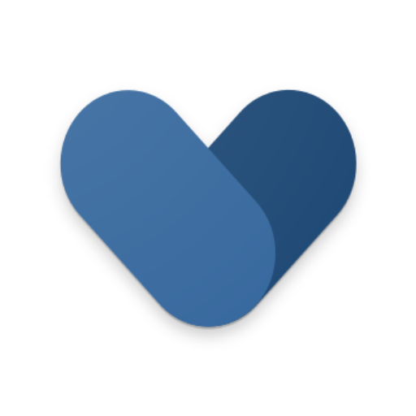
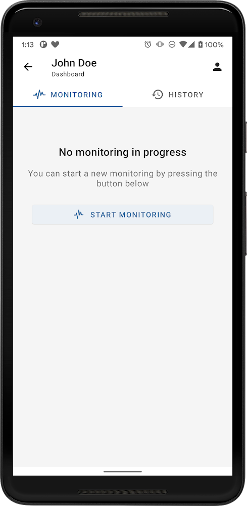
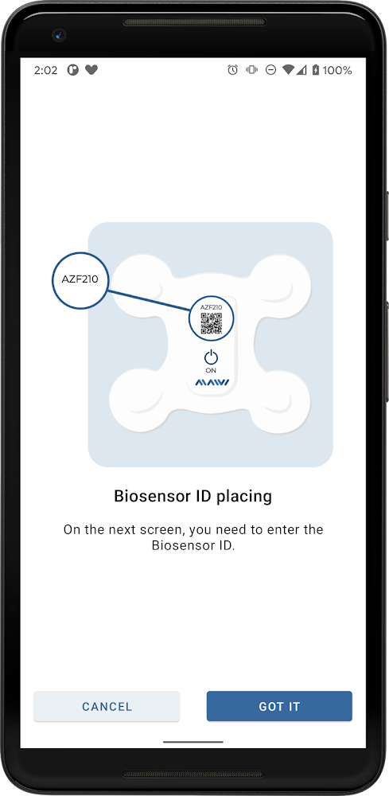

The public product story is strong on hardware and provider workflow. The missing leverage is a patient flow that confirms placement, explains signal quality in plain language, and recovers bad studies before support gets pulled in.
Patch-based cardiac monitoring does not need a flashy consumer app. It needs a patient to place the patch, pair the device, trust the signal, and finish the study without panicking or calling support unnecessarily.
The left side reflects a functional but low-guidance companion experience. The right side shows a lightweight mobile upgrade built around placement confidence, signal health, and fast recovery when something goes wrong.
Signal quality is unstable.
Patients may not know whether to re-seat the patch or wait.
Connectivity and wear quality are visible, but next action is vague.
That usually creates support calls or bad recordings.Great signal. No action needed.

Looks off? Reposition with step-by-step helpRecording quality is visible before the patient leaves onboarding.
The patient sees that the event is attached to the study and reviewed later.
If signal falls below threshold, the app offers a human handoff instead of ambiguity.
This is the kind of focused product upgrade Elinext can deliver without forcing a full redesign: activation UX, signal confidence states, symptom capture, and support-safe escalation for regulated mobile products.